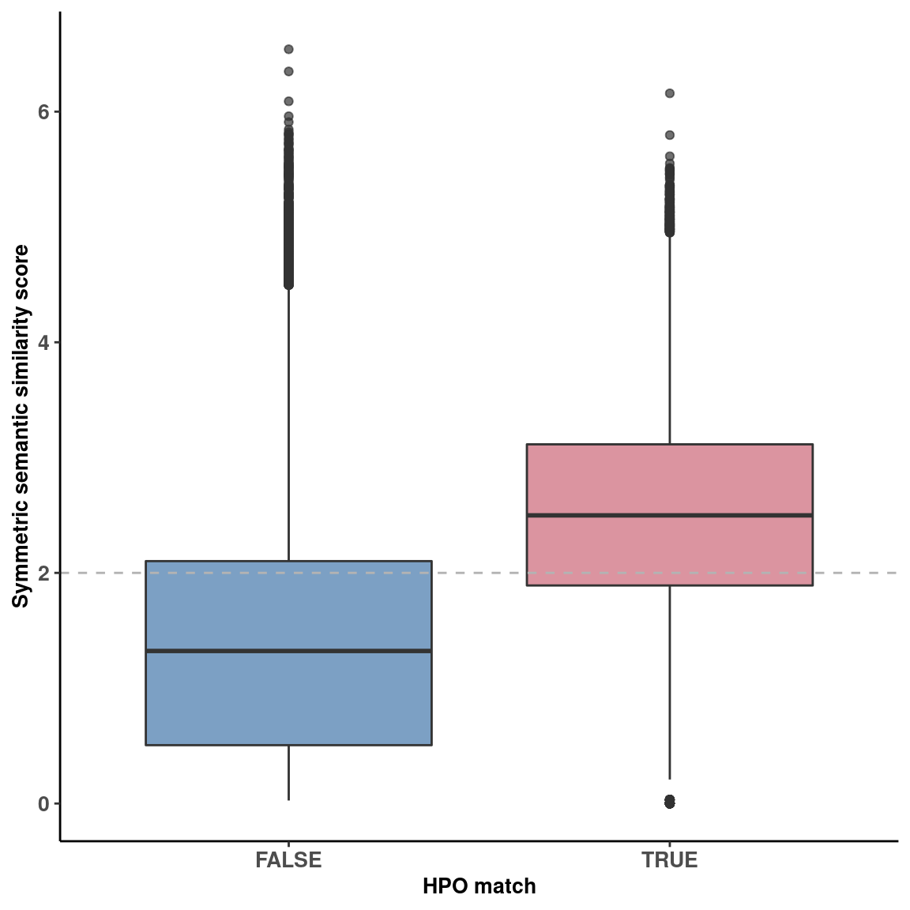

# load functions
source(snakemake@input$config)
# Load phenotype information for all cases
# var_hpo <- fread('/s/project/mitoMultiOmics/multiOMICs_integration/raw_data/patient_variant_hpo_data.tsv')
var_hpo <- fread(snakemake@input$var_hpo)
var_hpo <- var_hpo[!is.na(HPO_match)]
Fig_S2f <- ggplot(var_hpo, aes(HPO_match ,Semantic_sim, fill = HPO_match))+
geom_boxplot(alpha= 0.7)+
theme_classic()+
geom_hline(yintercept =2, color = "grey70", linetype = "dashed")+
scale_fill_ptol()+
ylab("Symmetric semantic similarity score") +
xlab("HPO match")+
theme(plot.title = element_text(hjust = 0.5),
axis.title.x= element_text( size=10, margin = NULL,face="bold"),
axis.title.y= element_text( size=10, margin = NULL,face="bold"),
axis.text.x = element_text(face="bold", size=10),
axis.text.y = element_text(face="bold", size=10),
legend.title = element_blank(),
legend.position = "none")
Fig_S2f

pdf(snakemake@output$fig, # "/s/project/mitoMultiOmics/multiOMICs_integration/Figures/Supplementary_figures/S_Fig2_f.pdf",
width = 6, height =6, useDingbats=FALSE )
print(Fig_S2f)
dev.off()
## png
## 2
IyctLS0KIycgdGl0bGU6IFN1cHBsZW1lbnRhcnkgRmlnIDJmIFNlbWFudGljIHNpbWlsYXJpdHkgdnMgSFBPX21hdGNoCiMnIGF1dGhvcjogc21pcm5vdmQKIycgd2I6CiMnICBpbnB1dDogCiMnICAtIGNvbmZpZzogJ3NyYy9jb25maWcuUicKIycgIC0gdmFyX2hwbzogJ2BzbSBjb25maWdbIlJBV19EQVRBIl0gKyAiL3BhdGllbnRfdmFyaWFudF9ocG9fZGF0YS50c3YiYCcKIycgIG91dHB1dDoKIycgIC0gZmlnOiAnYHNtIGNvbmZpZ1siRklHVVJFX0RJUiJdICsgIi9TdXBwbGVtZW50YXJ5X2ZpZ3VyZXMvU19GaWcyX2YucGRmImAnCiMnIG91dHB1dDogCiMnICAgaHRtbF9kb2N1bWVudDoKIycgICAgY29kZV9mb2xkaW5nOiBoaWRlCiMnICAgIGNvZGVfZG93bmxvYWQ6IFRSVUUKIyctLS0KCgojIGxvYWQgZnVuY3Rpb25zCnNvdXJjZShzbmFrZW1ha2VAaW5wdXQkY29uZmlnKQoKCiMgTG9hZCBwaGVub3R5cGUgaW5mb3JtYXRpb24gZm9yIGFsbCBjYXNlcwojIHZhcl9ocG8gPC0gZnJlYWQoJy9zL3Byb2plY3QvbWl0b011bHRpT21pY3MvbXVsdGlPTUlDc19pbnRlZ3JhdGlvbi9yYXdfZGF0YS9wYXRpZW50X3ZhcmlhbnRfaHBvX2RhdGEudHN2JykKdmFyX2hwbyA8LSBmcmVhZChzbmFrZW1ha2VAaW5wdXQkdmFyX2hwbykKdmFyX2hwbyA8LSB2YXJfaHBvWyFpcy5uYShIUE9fbWF0Y2gpXQoKRmlnX1MyZiA8LSBnZ3Bsb3QodmFyX2hwbywgYWVzKEhQT19tYXRjaCAsU2VtYW50aWNfc2ltLCAgZmlsbCA9IEhQT19tYXRjaCkpKwogIGdlb21fYm94cGxvdChhbHBoYT0gMC43KSsgCiAgdGhlbWVfY2xhc3NpYygpKwogIGdlb21faGxpbmUoeWludGVyY2VwdCA9MiwgY29sb3IgPSAiZ3JleTcwIiwgbGluZXR5cGUgPSAiZGFzaGVkIikrCiAgc2NhbGVfZmlsbF9wdG9sKCkrCiAgeWxhYigiU3ltbWV0cmljIHNlbWFudGljIHNpbWlsYXJpdHkgc2NvcmUiKSArIAogIHhsYWIoIkhQTyBtYXRjaCIpKwogIHRoZW1lKHBsb3QudGl0bGUgPSBlbGVtZW50X3RleHQoaGp1c3QgPSAwLjUpLAogICAgICAgIGF4aXMudGl0bGUueD0gZWxlbWVudF90ZXh0KCBzaXplPTEwLCBtYXJnaW4gPSBOVUxMLGZhY2U9ImJvbGQiKSwKICAgICAgICBheGlzLnRpdGxlLnk9IGVsZW1lbnRfdGV4dCggc2l6ZT0xMCwgbWFyZ2luID0gTlVMTCxmYWNlPSJib2xkIiksCiAgICAgICAgYXhpcy50ZXh0LnggPSBlbGVtZW50X3RleHQoZmFjZT0iYm9sZCIsICBzaXplPTEwKSwKICAgICAgICBheGlzLnRleHQueSA9IGVsZW1lbnRfdGV4dChmYWNlPSJib2xkIiwgIHNpemU9MTApLAogICAgICAgIGxlZ2VuZC50aXRsZSA9IGVsZW1lbnRfYmxhbmsoKSwKICAgICAgICBsZWdlbmQucG9zaXRpb24gPSAibm9uZSIpCgojKyBmaWcud2lkdGg9NiwgZmlnLmhlaWdodD02CkZpZ19TMmYKCgpwZGYoc25ha2VtYWtlQG91dHB1dCRmaWcsICMgIi9zL3Byb2plY3QvbWl0b011bHRpT21pY3MvbXVsdGlPTUlDc19pbnRlZ3JhdGlvbi9GaWd1cmVzL1N1cHBsZW1lbnRhcnlfZmlndXJlcy9TX0ZpZzJfZi5wZGYiLCAgCiAgICB3aWR0aCA9IDYsIGhlaWdodCA9NiwgIHVzZURpbmdiYXRzPUZBTFNFICkKcHJpbnQoRmlnX1MyZikgCmRldi5vZmYoKQoKCgoKCg==